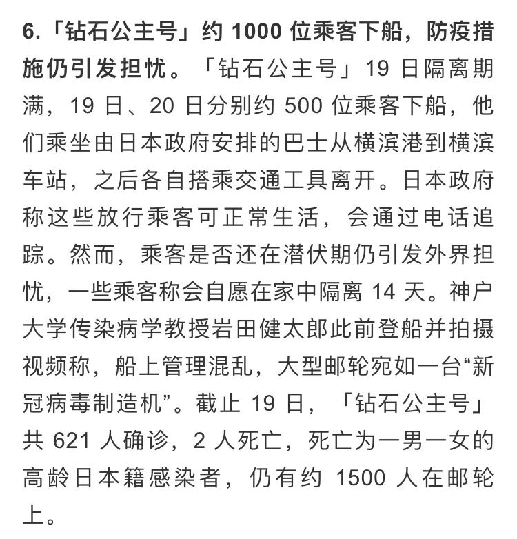
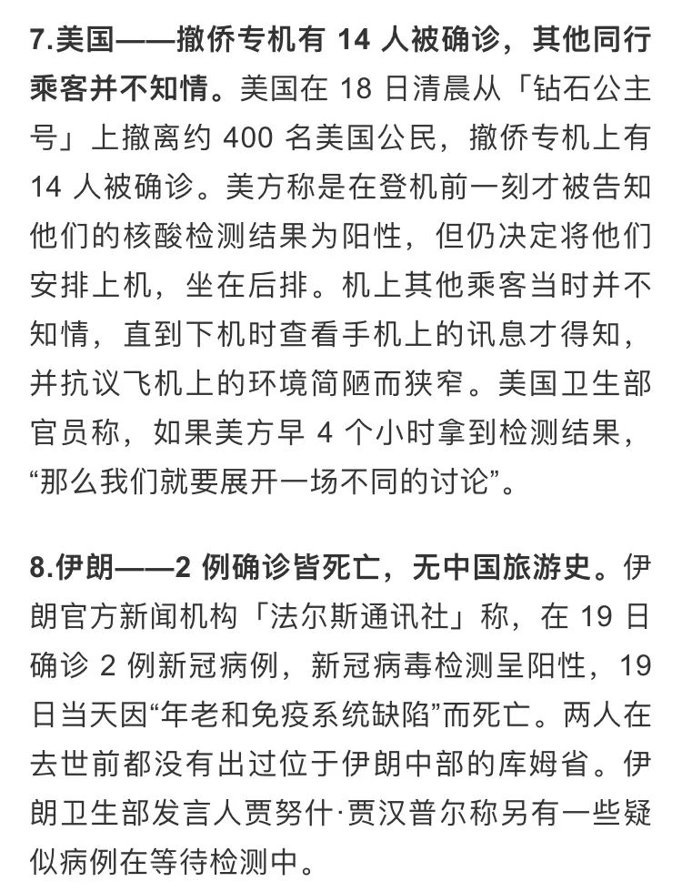
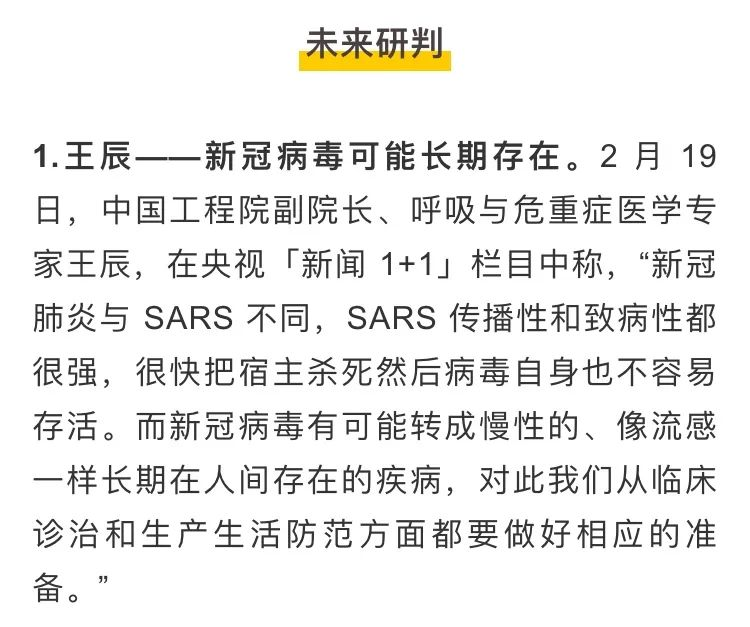
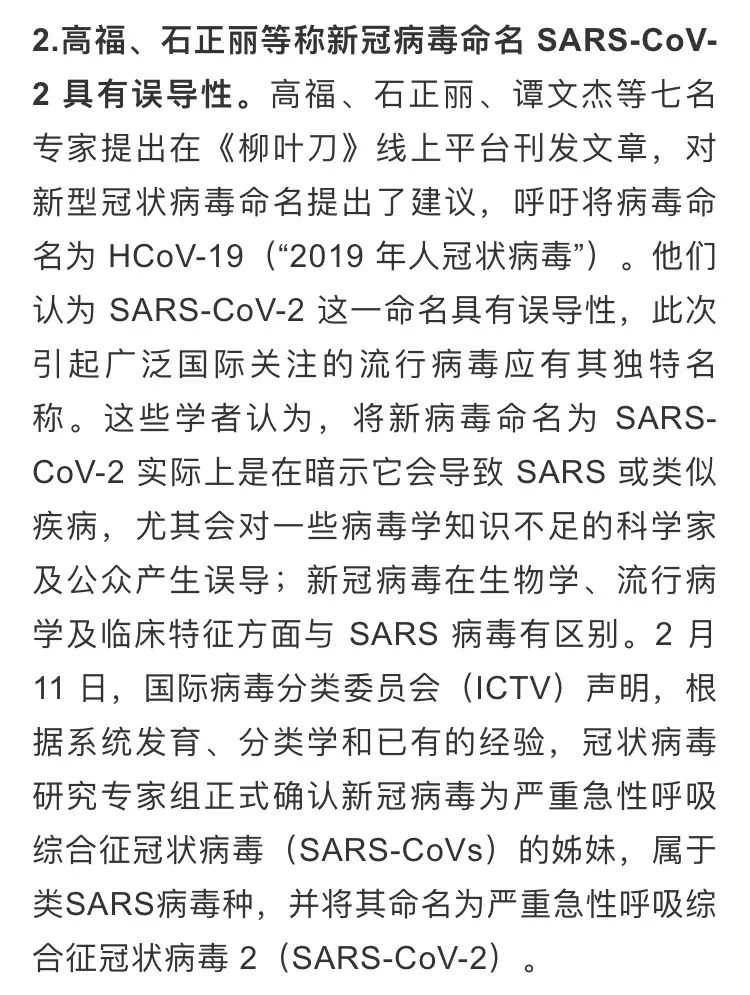
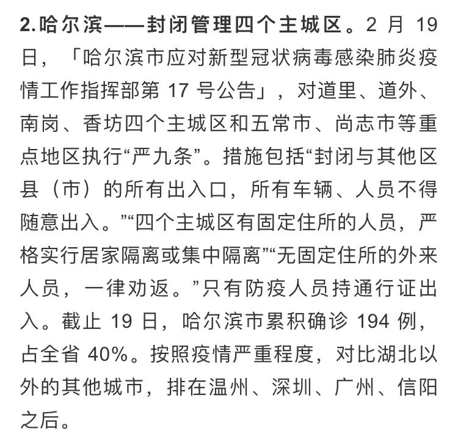
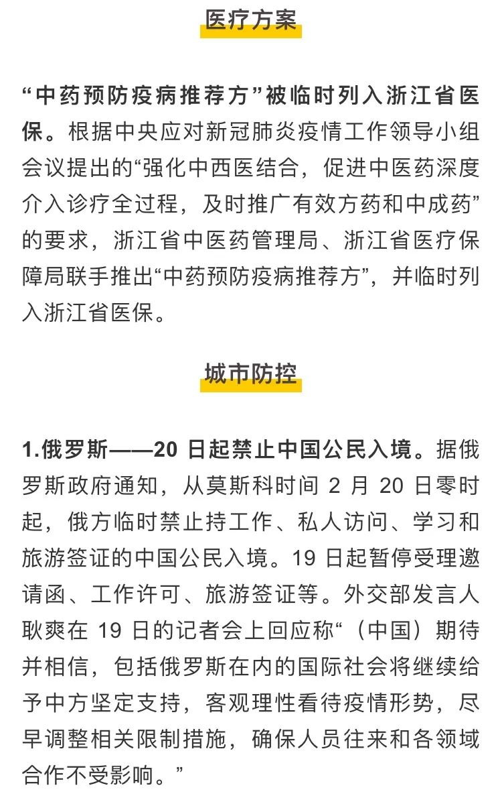
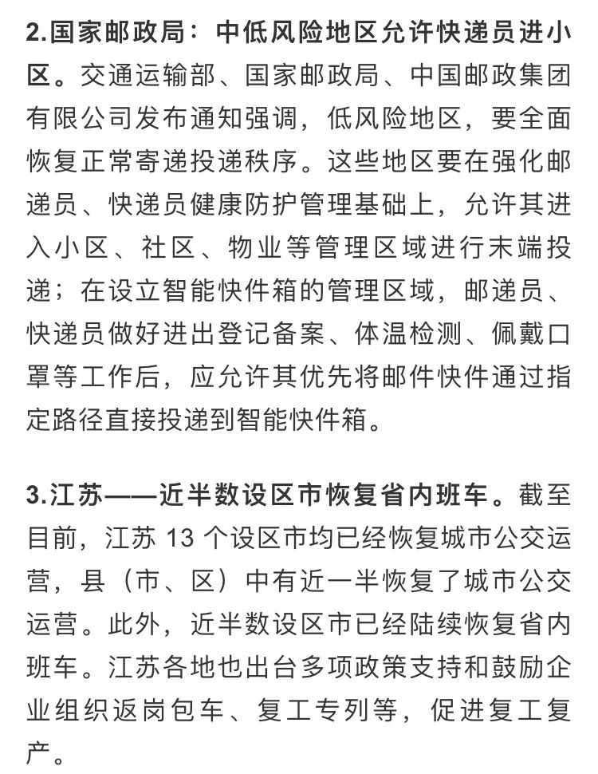
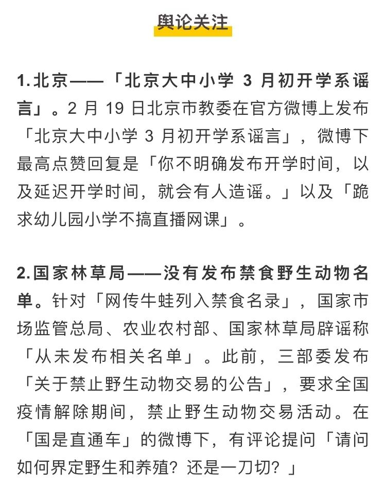

新冠病毒明显变弱传言不属实，武汉病毒所回应零号病人传闻，以及其他 26 条疫情新闻
原文链接 备份链接 所有的鱼现在同步在 allthefishnews.wordpress.com 更新并可通过邮件订阅。你可以复制上方链接浏览器打开或点击 阅读原文 获取订阅链接。 根据丁香医生实时数据，截至 2020 年 2 月 16 …
所有的鱼现在同步在 allthefishnews.wordpress.com 更新并可通过邮件订阅。你可以复制上方链接浏览器打开获取订阅链接。
*点击 阅读原文 可查看昨天的推送

根据丁香医生实时数据，截至 2 月 20 日 19 时，全国现存确诊病例 55876 例，累计确诊病例 74679 例，现存疑似病例 4922 例。其中，重症病例 11864 例，死亡病例 2122 例，累计治愈病例 16681 例。
由于统计口径再度发生变化，当日数据较前日数据变化已无参考价值，因此不再列出。
2 月 19⁄20 日的疫情新闻











文中所有新闻和消息来源可通过下方链接查看：https://docs.google.com/document/d/1nsqPfOLQkAzIzt2VwGw1X1KuvnnSkTq7wpcpvrC-UWc/edit《新型冠状病毒肺炎每日疫情播报》，可复制链接后科6学6上网打开
原文链接 备份链接 所有的鱼现在同步在 allthefishnews.wordpress.com 更新并可通过邮件订阅。你可以复制上方链接浏览器打开或点击 阅读原文 获取订阅链接。 根据丁香医生实时数据，截至 2020 年 2 月 16 …
原文链接 备份链接 所有的鱼现在同步在 allthefishnews.wordpress.com 更新并可通过邮件订阅。你可以复制上方链接浏览器打开或点击 阅读原文 获取订阅链接。 根据丁香医生实时数据，截至 2020 年 2 月 15 …
原文链接 备份链接 岛语 非常时期，武汉成了全国人民挂念、祈福的城市。封城后，武汉人民的真实生活是什么样？ 武汉在发生哪些变化？ 正和岛自1月26日起特别推出“叶青专栏”。叶青是一位定居武汉40年的市民，也是一名学者和官员。在过往多期的专 …
原文链接 备份链接 “ - 疫 情 之 下 - 武汉的疫情就像一簇紧簇的乌云，笼罩在每一个人的心头。但所幸，在这个受伤的城市中，在每台志愿者车里，在疲于奔波的路上，总有那么一群可爱的人，温暖着我们前线医护工作者的心。 ” 1 2020年 …
原文链接 备份链接 “ - 疫 情 之 下 - 父亲作为一家之主，把家里卖粮食的一万多块钱当做货款结给了供应商，按照他交代给我们的原话：“咱们已经吃亏了，就不要再让别人吃亏了，也让人家回家好好过个年。” ” …